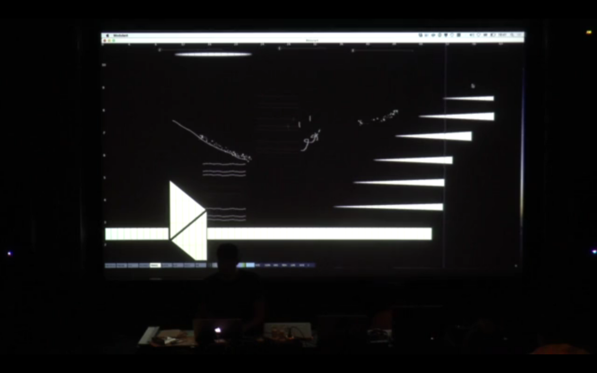
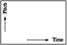

Modulant
{kind=link}

Figure 2: Goldsmiths, University of London, 6 Feb 2015
{kind=link}
Figure 3: Xenakis showing UPIC to children
interactive audio-visual instrument
If you are not a musician, making music with an instrument you've just picked up isn't going to be easy.
Modulant is an experiment to recreate possibly the simplest and most intuitive interface for visual composition of sounds & music.
| The horizontal axis of the painter's canvas is mapped onto time; the vertical axis is mapped onto a pitch spectrum spanning 10 octaves. The canvas is scanned from left to right, and at each |  |
timestep the pixels on the current vertical line is sonified.
Inspired by Evgeny Murzin's ANS synthesizer (1958) which came out of his search for a "Universal Synthesizer"; and by Iannis Xenakis' UPIC (1977), "a unique music-composing and educational tool for non-musicians, artists, programmers and children".
Follows a long history of Painterly Interfaces for Audiovisual Performance.
Developed as part of Gen.AV 1 | new tools for performance with generative audiovisuals.
Audience feedback from the evaluation survey (47 participants):
| avg | ||
|---|---|---|
| Audio-Visual Relation (1=worst to 5=best) | 4.12 | |
| Audience Understanding (1=worst to 5=best) | 4.63 | |
| Enjoyed more (1=audio to 5=visuals) | 3.18 |
~
Featured at NIME 2015: Prototyping Audiovisual Performance Tools: A Hackathon Approach
Available at AVUIs/Modulant
~
Reflection The strength of drawing-based musical instruments is also their weakness: they are very intuitive because the audio-visual mapping is direct, precise, and free from additional semantics – but the very same directness and lack of semantics make building up to a composition difficult.
The same is true for Modulant. As a tool for sound design and exploration, it offers infinite possibilities; however, its visual language and painterly interface are both too precise and not rich enough at the same time for comfortably devising musical compositions.
Background & Resources
- A Brief History of Optical Synthesis, by Derek Holzer
- Sound in Z – Experiments in Sound and Electronic Music, by Andrey Smirnov
- ANS synthesizer, Wikipedia
- UPIC, Wikipedia
- Thiebaut, Jean-Baptiste, et al. "Drawing electroacoustic music." Proc. ICMC. Vol. 8. 2008.
- Painterly Interfaces for Audiovisual Performance - Golan Levin and Collaborators
© 2015 Berkan Eskikaya, Louis Pilfold